<nav class="navbar">
  <div class="logo">
    <a href="index.html">
      
    </a>
  </div>

  <!-- 🔹 Menú principal con botón integrado -->
  <ul class="nav-menu">

    <!-- 🔹 Botón de autenticación integrado -->
    <li class="auth-item">
      <button id="auth-btn">
        <span id="auth-line1">Iniciar</span>
        <span id="auth-line2">sesión</span>
      </button>

      <!-- 🔽 Submenú del usuario -->
      <div id="user-menu" class="hidden">
        <button id="logout-btn">Salir</button>
      </div>
    </li>

    
    <li><a href="index.html">Inicio</a></li>
    <li><a href="videos.html">Videos</a></li>
    <li><a href="comunidad.html">BasuChat</a></li>
    <li><a href="recomendaciones.html">Recomendaciones</a></li>
    <li><a href="encuestas.html">Encuestas</a></li>
    <li><a href="playlist.html">Premium🔒</a></li>
  </ul>

  <!-- 🔹 Botón de menú móvil -->
  <div class="menu-toggle">
    <span class="bar"></span>
    <span class="bar"></span>
    <span class="bar"></span>
  </div>
</nav>
